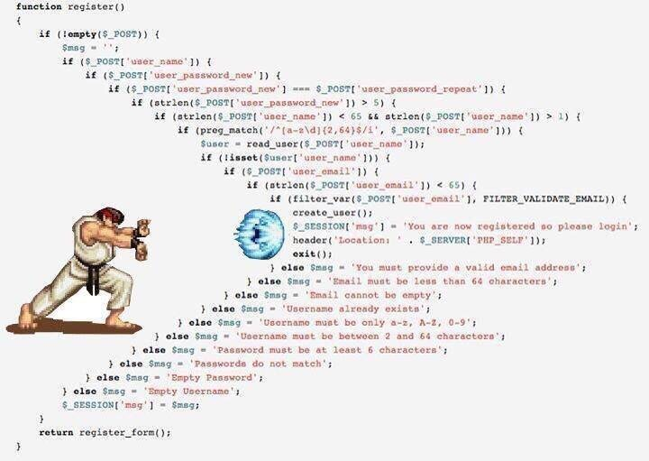

1. 如何重构“箭头型”代码
箭头型代码是指这样的代码:

关于箭头型代码的问题有如下几个：
1）我的显示器不够宽，箭头型代码缩进太狠了，需要我来回拉水平滚动条，这让我在读代码的时候，相当的不舒服。
2）除了宽度外还有长度，有的代码的if-else里的if-else里的if-else的代码太多，读到中间你都不知道中间的代码是经过了什么样的层层检查才来到这里的。
总而言之，“箭头型代码”如果嵌套太多，代码太长的话，会相当容易让维护代码的人（包括自己）迷失在代码中，因为看到最内层的代码时，你已经不知道前面的那一层一层的条件判断是什么样的，代码是怎么运行到这里的，所以，箭头型代码是非常难以维护和Debug的。
把“箭头型”代码重构掉的几个手段如下：
1）使用 Guard Clauses 。 尽可能的让出错的先返回， 这样后面就会得到干净的代码。
2）把条件中的语句块抽取成函数。 有人说：“如果代码不共享，就不要抽取成函数！”，持有这个观点的人太死读书了。函数是代码的封装或是抽象，并不一定用来作代码共享使用，函数用于屏蔽细节，让其它代码耦合于接口而不是细节实现，这会让我们的代码更为简单，简单的东西都能让人易读也易维护，写出让人易读易维护的代码才是重构代码的初衷！
3）对于出错处理，使用try-catch异常处理和RAII机制。返回码的出错处理有很多问题，比如：A) 返回码可以被忽略，B) 出错处理的代码和正常处理的代码混在一起，C) 造成函数接口污染，比如像atoi()这种错误码和返回值共用的糟糕的函数。
4）对于多个状态的判断和组合，如果复杂了，可以使用“组合状态表”，或是状态机加Observer的状态订阅的设计模式。这样的代码即解了耦，也干净简单，同样有很强的扩展性。
5） 重构“箭头型”代码其实是在帮你重新梳理所有的代码和逻辑，这个过程非常值得为之付出。重新整思路去想尽一切办法简化代码的过程本身就可以让人成长。
2. 在 Amazon 上洗钱
偷来信用卡，怎么提现？在 Amazon 上用盗来的身份出版书，书的内容都是随机字符串，每本书卖几百块钱；一手用信用卡买书，另一手从书的“作者”的角度取现金。
比买卖比特币提现要快得多 – 交易所都有提款上限。
3. Python2 在 2020 年元旦正式停止官方支持
现在用 Python 做自动化测试的同学可以转向 Python3 啦~
4. 产品的质量问题来源都有哪些？
现网问题
- 线上事故, 直接影响客户正常使用的问题
- 用户反馈的问题, 线上的小 BUG, 不影响正常使用, 但也是问题
- 运营度量数据, 产品发布后没有达到运营目标
研发过程的问题
- 测试过程中的bug, 有代码就会有 bug
- 研发过程的问题, 设计、需求、开发、测试、发布, 各个阶段的进度问题以及各个阶段之间衔接的问题
- 研发度量数据, 提交测试的延期时间、版本间隔时间等等
问题往往被很多繁杂的内容掩盖，而问题的根本原因又常常错综复杂。团队找到了问题还只是第一步，后面还需要借助各种根因分析方法，找到问题的根本原因，建设对应的规范和工具来规避问题的再次发生。